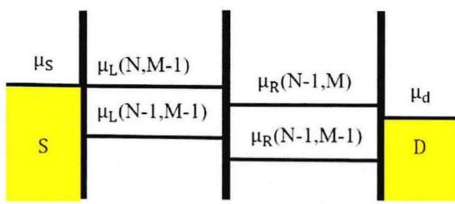
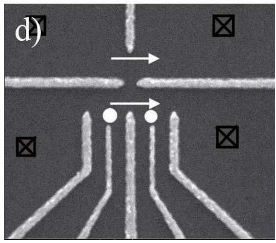

物理图像：从人造原子到人造分子
双量子点（double quantum dot，DQD）由两个量子点通过隧穿势垒与互电容串联或并联而成。当两个点空间距离足够近时，左右两点的局域态因隧穿而发生杂化，形成成键与反键类分子轨道——双量子点因此被称为”人造分子”（artificial molecule）。它在量子比特家族中扮演双重角色：
- 作为研究分子式杂化（hybridization）的最小平台：通过调节失谐 与点间隧穿耦合 ，实验上能完整扫过局域–非局域转变的相图；
- 作为多类量子比特的物理载体：同一器件只需选择不同的子空间编码，即可承载电荷比特、单态–三重态量子比特与各类衍生比特。

双量子点器件结构与电子传输示意图
两种几何：串联与并联
按两点的空间排列与电子输运路径，双量子点分两类（论文 1.4.3 节）：
- 串联双量子点（series DQD）：两量子点首尾相接，电子必须依次通过左点再通过右点才能从源极到达漏极。两个点分别以隧穿率 、 与源漏库耦合，点间耦合 由中间势垒控制。绝大多数电荷/自旋比特实验采用此种结构；
- 并联双量子点（parallel DQD）：两量子点各自独立地同时与源、漏两个电子库耦合，电子只需经过其中一个点即可形成电流。两点各自的隧穿率记为 、、、，点间仍存在耦合 。
本词条后文主要以串联双量子点为模型——并联双点的等效电路与能级分析类似，只需把隧穿路径改成两个并联通道。
理论模型
等效电路与两类耦合
串联双量子点的经典图像是一个电容–电阻网络（论文式 1.5；论文式 1.17–1.21）。左点 1 与右点 2 分别通过电容 、 与柱塞栅 、 耦合，通过电容 、 与源、漏电子库耦合；两点间经互电容 与隧穿电阻 相互作用耦合。每个点的总电容为
互电容 引起纯粹的静电相互作用（电荷感应电荷），隧穿耦合 （等价于混频矩阵元 ）则把两个点的量子态杂化。两者大小可独立调节： 由几何间距与介电环境决定， 则通过夹在两点间的势垒栅电压指数式压低或抬高。
最小哈密顿量与避免交叉
只关心电荷自由度时，取左右局域态 为基，双量子点构成一个二能级系统。引入失谐（detuning） 与隧穿耦合 ，最小哈密顿量为
其中 、。本征值为
在 处形成大小为 的能隙——避免交叉（avoided crossing），或称反交叉（anti-crossing）。对应本征态为最大混合态 。
失谐 完全由电极电压决定： 实质上是两个柱塞栅压差的线性组合；隧穿耦合 则由势垒栅独立控制。这一解耦使得双量子点成为一个可”全电控”的参数化二能级系统，是几乎所有衍生比特的通用底座。

串联/并联双量子点的电路示意与扫描电镜照片
静电能与电化学势
完整描述需要回到常相互作用框架。设左、右点电子占据数分别为 ，静电能为（论文式 1.17）
其中三点特征充电能为
两点各自的电化学势定义为向该点增加一个电子所需的最小能量（论文式 1.22–1.23）：
零偏压下平衡占据是同时满足 与 的最大 ——即 最小的电荷组态。 时 ， 分解为两个独立单点能量之和； 时系统等价于电荷数为 的单点。两个极限之间正是”人造分子”区。完整的蜂窝图边界方程推导与三相点位置见电荷稳定图。
混合角
在电荷基 下，沿失谐改变系统可调出有效交换能
更常用的做法是引入混合角（mixing angle）
把绝热本征态写成
是描述电荷混合程度的几何参数：在 时 或 ，本征态退化为纯局域态；在 时 ，左右完全混合。混合角的梯度 在电荷比特与微波腔耦合中格外重要：在电荷–光子耦合系统中，有效耦合强度 被 调制，在 处达到最大。
从最小哈密顿量到完整 Hubbard 模型
当电荷态子空间不再仅限 与 ，或需要考虑自旋、轨道自由度时，最小模型须升级为 Hubbard 哈密顿量：
其中 是第 点的粒子数算符，、 来自电容网络， 是隧穿矩阵元。Hubbard 模型与常相互作用模型的对应关系是
其中 是所有等效电容之和。去掉跃迁项 时回到经典蜂窝图；保留 时反交叉位置和形貌随之改变，与实验的精细结构吻合。
三相点与偏压三角形
零偏压下，电子依次通过双点的输运条件 只在蜂窝图三条边的交汇处满足，称为三相点（triple point）。三相点分两类（论文图 1.10(d)）：
- 电子型：电子沿”源 左点 右点 漏”顺序隧穿；
- 空穴型：等效于一个空穴沿”源 右点 左点 漏”反向隧穿。
施加有限源漏偏压 后，简并条件放宽为偏压窗口内的一组不等式，每个三相点在相图上展开为偏压三角形（bias triangle）。三角形的三条边分别对应 与源极费米面对齐、两点化学势互相对齐、 与漏极费米面对齐；边长正比于偏压大小，是提取杠杆臂的标准手段：
论文在 Ge 纳米线双量子点中（）直接量出偏压三角形边长，给出 、；进一步提取 、，，对应充电能 、。
偏压进一步增大时激发态进入窗口，三角形内部出现与边平行的激发态电导线，可用于读出单态–三重态量子比特等体系的能级间距。论文中即在偏压三角形底部观测到 – 的能级差 。
参数与量级
| 量 | 典型值 / 范围 | 来源 |
|---|---|---|
| 反交叉能隙 （电荷比特） | （GaAs，门控定义） | （拉比频率标定） |
| 充电能 | （浅刻蚀 GaAs 单点）；–（锗硅纳米线空穴点） | 、 |
| 充电能 （双量子点） | 、（Ge 纳米线双点） | |
| 点间隧穿 （自旋阻塞提取） | （Ge 纳米线双点，自旋轨道 ） | |
| 杠杆臂 | 、（Ge 纳米线双点） | |
| 栅电容 | （左）、（右）（Ge 纳米线双点） | |
| 耦合电容比 | （弱）（人造分子区）（强） | 、 |
| 单态–三重态能级差 | 数百 eV（GaAs 约 ）；Ge 双点约 （多空穴） | 、 |
| Ge 纳米线双点朗德 因子 | ||
| 工作温度 | （稀释制冷机） | （GaAs） |
实验特征与测量
电荷稳定图
双量子点最常用的”地图”是电荷稳定图：扫描两个柱塞栅压 ，记录使系统能量最低的电荷组态 。它分弱、中、强三种形态（论文图 1.7）：
- 弱耦合（）：矩形网格，相当于两个独立单点的库仑阻塞峰叠加；
- 中间耦合（）：六边形蜂窝——典型的人造分子工作区；
- 强耦合（）：斜向平行线族，等价于一个大单点。
实验上观测蜂窝图有两种主流方法。直接输运测量源漏电流或微分电导：信号只在三相点与偏压三角形附近出现，蜂窝内部是一片”黑”。电荷传感（QPC 电荷传感器、SET 或射频反射测量）则可在整个相图上描出全部电荷转移线，并数出每个 的绝对电子数；后者测量速度远高于传统方法。
论文在 Ge 纳米线双量子点中演示了”高度可调”的隧穿耦合：在固定 时，把中间栅 从 调到 ，可以直接把蜂窝图从清晰锐利的分立三相点形态过渡到模糊蜂窝、再到典型蜂窝——整个形态演化即 标定的图像化。
自旋阻塞与自旋–电荷转换
把自旋自由度纳入图像后，双量子点出现一种标志性的实验现象——泡利自旋阻塞（Pauli spin blockade，PSB）。它由两个事实共同导致（论文 2.2.2 节）：
- 点间隧穿保持自旋守恒；
- 同一轨道的两个电子不能同自旋（泡利不相容原理）。
考虑 – 跃迁区。负失谐 时电子分居两点， 单态 、三重态 近似简并；正失谐 时基态是 ， 因一个电子必须占据激发轨道而高出 （GaAs 中约 ）。两个电子态在 时构成有效二能级系统，在 时单态可顺利进入 而三重态被阻塞——这就是自旋到电荷的转换（spin-to-charge conversion），把不可直接读出的自旋态映射为 与 两种电荷构型。两种共三种方式可在实验上观测 PSB：
- 输运法：在源漏间加偏压，反偏压下循环 在形成三重态时中断，对应偏压三角形内电流被抑制；正偏压下循环反向、只经过 ，电流畅通。正反偏压的不对称（整流特征）是 PSB 的输运指纹；
- 脉冲栅法：不依赖电流，先在 区初始化、再到加载点无自旋选择地装入第二个电子（ 与三个 近似等概率），最后脉冲到 区内的测量点停留大部分周期；当测量点落在由三条电荷跃迁延长线围成的”阻塞三角形”内时，QPC 信号介于 与 之间——证明部分时间系统被阻塞在 。论文样品上由信号衰减拟合给出三重态弛豫时间约 ；
- 偏压三角形法：论文在 Ge 纳米线双量子点中比较正反偏压下的三角形：正向偏压三角形底部基态线上电流被抑制，发生 PSB；反向偏压三角形畅通无阻。从阻塞三角形宽度读出 ；在不同磁场下重复此测量，得到 ，线性拟合给出 。
非零磁场下三重态 进一步发生塞曼劈裂，漏电流随磁场呈”谷形”特征。Ge 纳米线双量子点的强自旋轨道耦合使 、 在外磁场下混合解除阻塞，产生漏电流的双峰结构。论文用
拟合漏电流，提取 、。
从双量子点到衍生比特
双量子点的真正威力在于同一硬件承载多种编码：
- 电荷比特：取 、 为计算基，最小哈密顿量即上文二能级模型。失谐 控制 轴、隧穿耦合 控制 轴，脉冲、微波或绝热扫描分别实现突变、共振和能级跟随操控；
- 单态–三重态比特：取 与 为计算基， 轴由交换能 给出（全电控）， 轴由两点磁场差给出；
- 混合与共振交换比特：把比特子空间扩展到 – 与 的三电子/三空穴区；
- 光子辅助隧穿与LZSM 干涉：在双量子点失谐上叠加单色或脉冲驱动，重复穿越反交叉得到相干干涉条纹——论文在 GaAs 双量子点上观察到 14 阶光子过程，并证明其本质是 LZS 干涉；
- 腔杂化：双量子点整体充当微波腔的”人工原子”，耦合强度由电偶极与混合角共同决定，是cQED在半导体中的主要载体。
双量子点也是构造更大系统的基本单元——三量子点、四量子点阵列与量子元胞自动机都以它为基本构建块。
与其他概念的关系
- 半导体量子点：双量子点由两个单点组成，继承了库仑阻塞、电化学势、隧穿耦合等所有单点概念；
- Si/SiGe 纳米膜：双量子点调控能力的”最低平台验证”——湿法转移膜上首次做出栅控双点，隧穿耦合经 QPC 线型拟合在 0.97–9.1 GHz 平滑可调、200 ps 脉冲下电荷稳定；
- 常相互作用模型：给出双量子点电容网络与静电能的定量预言；
- 电化学势 的简并条件定义了蜂窝图的全部边界；
- 充电能 决定蜂窝沿栅压方向的周期与原胞被劈开的间距；
- 隧穿耦合 使三相点附近出现量子弯曲，决定反交叉能隙 ；
- 电荷稳定图：双量子点的标准观测图，蜂窝结构与偏压三角形是其全部信息；
- 库仑阻塞与库仑菱形：在单点层面是同一阻塞条件的另一面，推广到双点变为蜂窝；
- 双层石墨烯量子点：加指栅即可扩展为双点的平台实例，其隧穿势垒由 p–n 结构成（势垒栅压调结的宽窄陡缓），与静电势垒双点的调控语言一一对应；
- 电荷量子比特：以双量子点中单电子的左右局域态为逻辑基，最小哈密顿量与本词条 §理论模型一节完全相同；
- 单态–三重态量子比特：以 区两电子自旋态为逻辑基，使用本词条的”自旋阻塞”作为读出；
- Landau–Zener 跃迁与LZSM 干涉：以双量子点的反交叉为分束器，多次穿越构成普适单比特旋转；
- 光子辅助隧穿：双量子点失谐上的周期驱动，PAT 图像与 LZS 图像在强微波下趋于一致；
- 电荷–光子耦合：双量子点通过电偶极与微波腔耦合，有效强度 在 处最大；
- QPC 电荷传感与射频反射测量：在蜂窝图上读出全部电荷转移线的标准手段。
- 电荷穿梭：硅双点的隧穿耦合拟合需要四能级（含谷）理论——DiCarlo 二能级公式在谷相位差 δφ→π 时误差达 65%，谷间耦合 |t₋| 只能从四能级电荷分布或电流比提取（见该词条”单次转移的保真度理论”一节）。
参考文献
- 双量子点输运（稳定图、偏压三角形、赝自旋）的奠基综述：van der Wiel et al., RMP 74, 801 (2002)。
- 双点作为自旋比特载体的方案：Loss & DiVincenzo, PRA 57, 120 (1998)。
完整文献库（含各篇站内全文页）见 参考文献库。